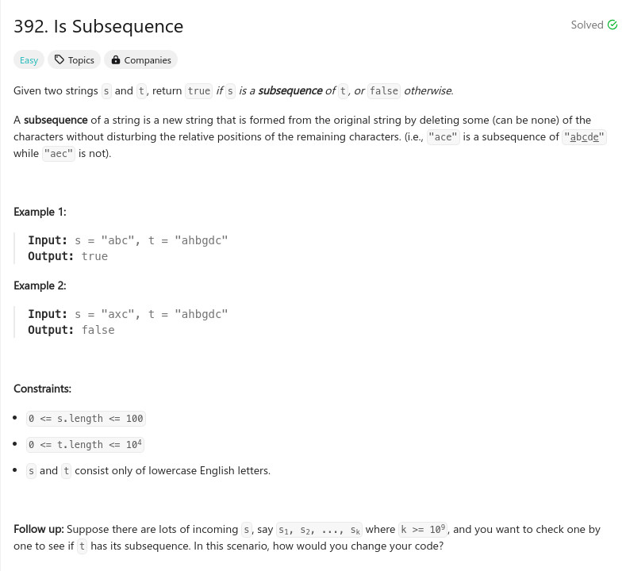

參考資訊：
https://www.cnblogs.com/cnoodle/p/13082549.html
題目：

class Solution {
public:
bool isSubsequence(string s, string t) {
int i = 0;
int j = 0;
while ((i < s.size()) && (j < t.size())) {
if (s[i] == t[j++]) {
i += 1;
}
}
return i == s.size();
}
};